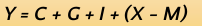

Pendapatan Nasional
Pendapatan nasional merupakan pokok bahasan yang menarik karena sangat erat hubungannya dengan kesejahteraan dan kebijakan yang diambil untuk memperbaiki kondisi perekonomian.
Manfaat Penghitungan Pendapatan Nasional
- Membandingkan kemajuan perekonomian negara dari waktu ke waktu
- Menilai kinerja ekonomi suatu bangsa
- Sebagai pedoman merumuskan kebijakan pemerintah
- Mengetahui dan menelaah susunan atau struktur perekonomian
- Membandingkan perekonomian antar daerah atau antar negara
- Mengetahui pertumbuhan ekonomi dan pendapatan per kapita
Menghitung Pendapatan Nasional
1. Pendekatan Produksi
Pendekatan produksi atau pendekatan nilai tambah merupakan metode yang didasarkan pada perhitungan nilai total produk domestik bruto (PDB) suatu negara, yaitu jumlah nilai seluruh barang dan jasa yang diproduksi oleh faktor produksi yang ada di dalam negeri selama satu tahun.
Pendapatan nasional dapat dirumuskan sebagai berikut:
Keterangan:
- Y: Pendapatan nasional
- Q: Jumlah barang atau jasa
- 1, 2, n: Jenis barang atau jasa
2. Pendekatan Pendapatan
Pendapatan nasional menggunakan pendekatan pendapatan dihitung dengan menjumlahkan seluruh pendapatan yang diterima masyarakat sebagai pemilik faktor produksi atas penyerahan produksi kepada rumah tangga perusahaan.
Pendapatan nasional didapat dari penjumlahan:
- Kompensasi untuk pekerja
- Keuntungan perusahaan
- Pendapatan usaha perorangan
- Pendapatan sewa
- Bunga neto
Pendapatan nasional dapat dirumuskan sebagai:
Keterangan:
- Y: Pendapatan nasional
- w: Pendapatan dari upah/gaji
- r: Pendapatan bersih dari sewa
- i: Pendapatan dari bunga
- p: Pendapatan dari keuntungan perusahaan dan usaha perorangan
3. Pendekatan Pengeluaran
Perhitungan pendapatan nasional dengan pendekatan pengeluaran merupakan jumlah pengeluaran secara nasional untuk membeli barang dan jasa selama satu periode. Komponen dalam metode pendekatan pengeluaran sebagai berikut:
Keterangan:
- Y: Pendapatan nasional
- C: Pengeluaran konsumsi rumah tangga
- G: Pengeluaran pemerintah
- I: Investasi
- X: Ekspor
- I: Impor
Konsep yang Berkaitan dengan Pendapatan Nasional
a. Produk Domestik Bruto (PDB) / Gross Domestic Product (GDP)
Merupakan jumlah produk berupa barang dan jasa yang dihasilkan oleh unit-unit produksi di dalam batas wilayah suatu negara selama setahun. Termasuk yang dihasilkan oleh perusahaan asing, asalkan wilayahnya masih dalam wilayah suatu negara. Contohnya terdapat perusahaan A dari Korea yang mempunyai cabang di Indonesia, hasil produksinya juga harus dihitung ke dalam GDP.
b. Produk Nasional Bruto (PNB) / Gross National Product (GNP)
Merupakan nilai produk berupa barang dan jasa yang dihasilkan oleh penduduk suatu negara (nasional) selama satu tahun, termasuk yang dihasilkan oleh warga negara tersebut yang dihasilkan di luar negeri. Contohnya seperti seseorang pria dari Indonesia yang menjual pakaian di Singapura, hasilnya berupa barang dan jasanya termasuk dalam GNP. Nah, perlu diingat, GNP menekankan pada aspek kewarganegaraan (nationality).
c. Produk Nasional Neto (PNN) / Net National Product (NNP)
Merupakan hasil dari dari nilai dari GNP yang telah dikurangi dengan penyusutan modal dalam proses produksi. Inti dari NNP merupakan konsep pendapatan nasional yang dilihat hanya dari laba yang diperoleh. Karena tujuan dari NNP adalah untuk mencari netto atau nilai bersih dari suatu produksi.
d. Pendapatan Nasional Neto (PNN) / Net National Income (NNI)
NNI ini menghitung pendapatan nasional berdasarkan jumlah balas jasa yang diterima oleh masyarakat sebagai pemilik faktor produksi. Jika ditulis dalam rumus sebagai berikut:
e. Pendapatan Individu / Personal Income (PI)
PI ini juga bagian dari pendapatan nasional. PI ini menghitung jumlah pendapatan yang diterima oleh setiap orang. Tetapi harus dikurangi dengan laba yang ditahan, iuran asuransi, iuran jaminan sosial, dan ditambah dengan pembayaran pindahan/transfer (transfer payment). Pendapatan perseorangan dapat ditulis dalam rumus berikut:

f. Pendapatan Disposabel / Disposable Income (DI)
Merupakan pendapatan yang siap untuk dimanfaatkan untuk membeli barang dan jasa beserta tabungan yang disalurkan menjadi investasi tetapi harus dikurangi pajak langsung. Pajak langsung adalah pajak yang bebannya tidak dapat dialihkan kepada orang lain , contohnya pajak pendapatan.